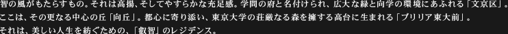
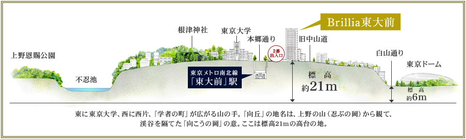
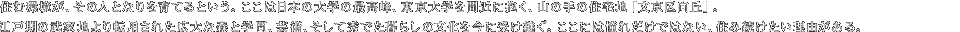
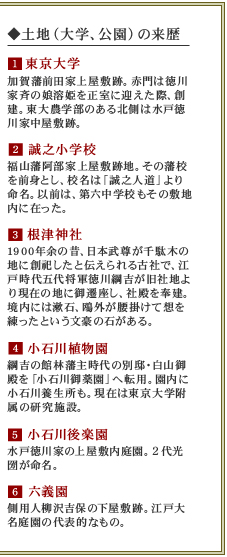
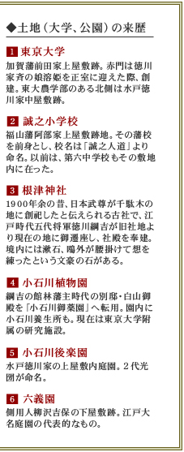
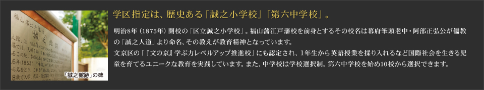

立地概念イラスト ※掲載の立地概念イラストは概念図であり、実際の位置、スケール等は異なります。

 
歴史と教育・文化MAP ※歴史と教育・文化MAPは説明用の概念図で、交通機関等を省略しております。予めご了承ください。
ブリリア東大前の建設地は江戸の昔から脈々と住み継がれてきた山の手の住宅地。ここは日本橋より一里（約４キロ）、中山道が日光御成道と分岐した追分あたり。周辺には広大な大名・旗本屋敷が並び、奥床しい山の手の風情を醸し出していました。東大赤門といえば加賀藩前田家上屋敷跡ですが、ここは水戸徳川家（現東大農学部）と福山藩阿部家の屋敷に囲まれた場所。由緒正しい山の手の一角です。
文の京、その名のとおり区内には東京大学、日本医科大学などの大学キャンパス、お茶の水女子大附属、筑波大附属の中高など、潤沢な教育施設が整う、まさに文教の中心地。明治以降、広大な武家地が大学敷地へと転用され、より学問の府としての色合いが鮮明になりました。ブリリア東大前の東側には、東大の森が庭のように広がります。この地に暮らすことで向学の気運が高まる、そんな街環境です。
「向丘」は文豪・森鴎外が観潮楼（千駄木）へ移り住むまで居を構え、後に英国より帰国した夏目漱石が東京大学で教鞭をとりながら暮らした山の手。漱石は処女作「我が輩は猫である」をこの地で執筆、東大キャンパス内の育徳園心字池は名作の舞台となり、三四郎池と呼ばれています。また樋口一葉は幼少期から晩年まで東大周辺で過ごし名作「にごりえ」を著しました。ここは東大ゆかりの学者や文人たちも暮らした、史上に名を残す文教の地です。
文京区は、東京23区のなかでも大学、公園、神社などの広大な森が広がる緑被率の高い地。江戸時代に創建された武家屋敷や寺社が大学など教育機関や公園になり、広大な森へと転じています。東大キャンパスの桜やいちょう並木、四季折々に楽しめる小石川植物園、六義園、つつじまつりが開かれる根津神社、あじさいまつりの白山神社など、日常のなかで風趣を味わえます。また、竹久夢二美術館を始め文化施設も数多く点在し、散策しながら自然と文化を愉しめます。